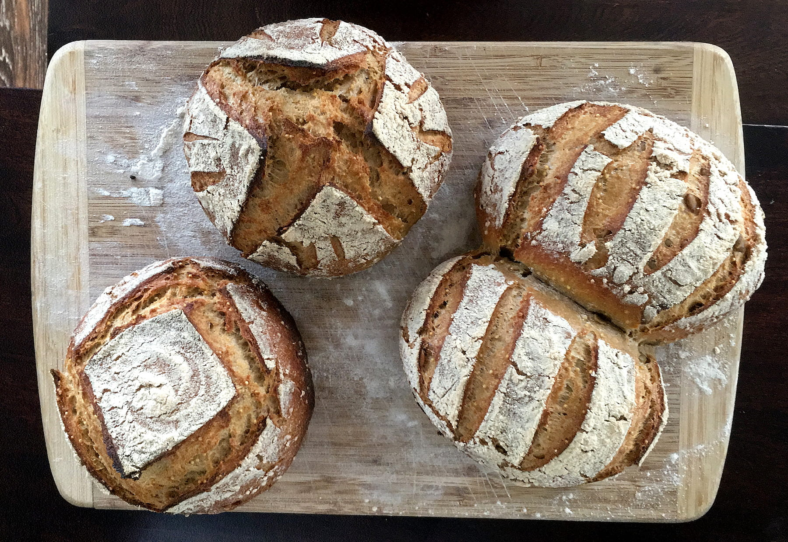

Roman’s Bead Recipe!
Growing up in Germany, I was introduced to big, hearty loaves of bread. I missed them when I moved to the US, where I could only find squishy soft white bread. So I started baking my own. I’ve been baking and refining this recipe for over 15 years.

Ingredients
- flour
- salt
- sourdough starter
- water
- seeds (optional)
The Process
Mix
- 400g bread flour or whole wheat flour or any combination of the two. A good starting point is 50% bread flour and 50% whole wheat
- 10g salt
- 50g sourdough starter (see next page)
- 300g water
- Optional: Buckwheat, millets, pumpkin seeds, flax seeds, sesame seeds, sunflower seeds, nuts, etc.
Ferment
Let mixture ferment at room temperature for 12–18 hours. Less for hot days, more for cold. It’s pretty forgiving, though the bread will taste more sour the longer it ferments. If the baked bread is too dense or doesn’t rise much, it was probably not fermented long enough.
Bake
Give the dough a quick knead with some additional flour and shape into a loaf. You can let the loaf sit for another 30min, but I find it not necessary.
Ideally you bake in a cast-iron pot with a (heat-proof) lid.
Pre-heat oven to 500F with the cast-iron pot inside.
Score the loaf with a knife before putting it in the oven.
Turn down temperature to 475F and bake for 30 min with lid closed.
Turn down heat to 400F and bake for another 30 min without lid.
Eat
Let bread cool before cutting it. (It’ll be hard to be patient.)
Inspired by the 2006 No-Kneed Bread New York Times recipe.